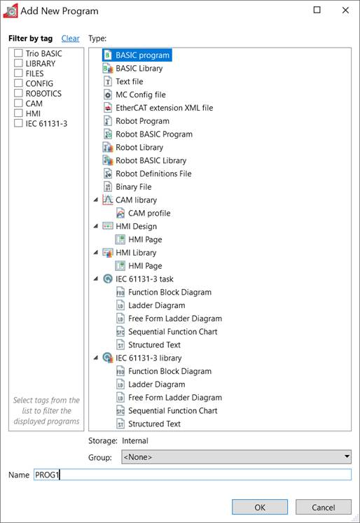

A new program can be created by Selecting "Program / New" from the main menu or by selecting "New" from the "Programs" item in the controller menu.
The "New Program" dialog is launched. This allows the user to select the type of program required and enter a name. Clicking on "OK" will create the new program.

This is only available while connected in Sync Mode.